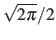
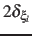

The following options control the computational cost of metadynamics calculations, but do not affect results.
Default values are chosen to minimize such cost with no loss of accuracy.
useGrids Interpolate the hills with grids Context: metadynamics Acceptable values: boolean
Default value: on Description: This option discretizes all hills for improved performance,
accumulating their energy and their gradients on two separate grids
of equal spacing. Grids are defined by the values of
lowerBoundary, upperBoundary and width
for each colvar. Currently, this option is implemented for all
types of variables except the non-scalar types (distanceDir
or orientation). If expandBoundaries is defined
in one of the colvars, grids are automatically expanded along the
direction of that colvar.
hillWidth Relative width of the hills Context: metadynamics Acceptable values: positive decimal
Default value:  Description: Along each colvar, the width of each Gaussian hill
(
) is given by the product between this number
and the colvar's width. The default value gives hills
whose volume is the product of times the width of all
colvars. For a smoother visualization of the free energy plot,
decrease width and increase hillWidth in the same
proportion. Note:when useGrids is
on (default in most cases), values smaller than 1
should be avoided to avoid discretization errors.
rebinGrids Recompute the grids when reading a state
file Context: metadynamics Acceptable values: boolean
Default value: off Description: When restarting from a state file, the grid's parameters (boundaries
and widths) saved in the state file override those in the
configuration file. Enabling this option forces the grids to match
those in the current configuration file.